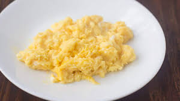

Scrambled Egg Recipe

Scrambled Eggs!
Scrambled eggs are quick, easy and nutritious. Ready in minutes and packed with the nutrients you need to get through the day.
Always a great dish, scrambled eggs are even better when you are short on time and need something fast.
Ingredients:
- 1 or more eggs.
- 1 tablespoon of butter.
- salt and pepper.
Steps:
- Add eggs, salt and pepper to mixing bowl; mix thoroughly.
- Heat pan over high heat.
- Add butter to hot pan.
- After butter melts, add eggs.
- Stir egg mixture until desired texture is reached.